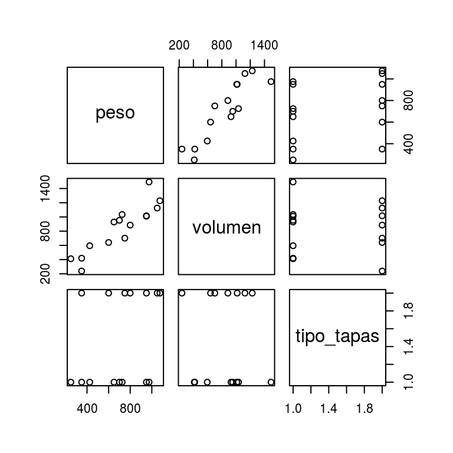
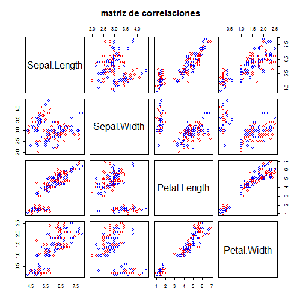
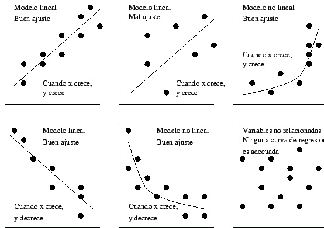
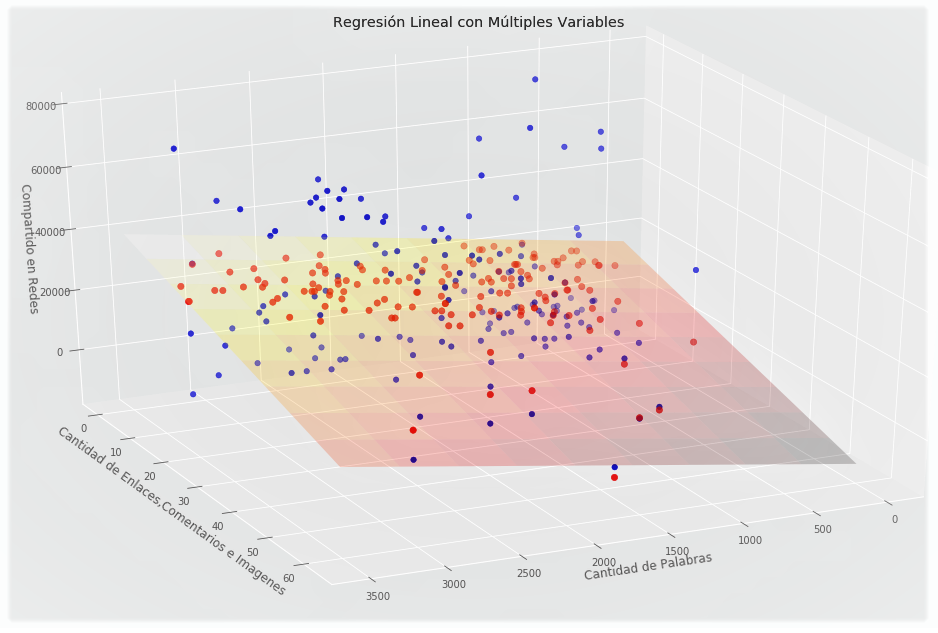

Acerca de HRegLinMúltiple
Microservicio en el que mediante el uso de la técnica estadística de regresión lineal múltiple se busca entender la relación funcional entre diferentes variables independientes (X) con respecto a una variable dependiente (Y), para determinar las causas de variación en el comportamiento de la variable dependiente mediante una función de regresión lineal.
* Mediante el uso del análisis de regresión lineal múltiple podremos: identificar las causas responsables del resultado, comparar modelos causales y predecir el comportamiento o estado de una variable dependiente en un tiempo determinado.
¿Cómo se usa?
1.- Diagrama de dispersión múltiple
Para comprobar si los datos a graficar son viables se debe realizar un diagrama de dispersión múltiple en el que se pueda intuir si existe relación lineal con la variable respuesta.
 Aplicaciones
- Estadística de regresión lineal múltiple
- Minería de datos
- Aprendizaje automático
- Inteligencia Artificial
Especificación técnica
- Servicios: WEB API
- URL: harpa_api.hde.mx/harpa/hreglinmult
- Métodos: HTTP REST POST
Nota: Este método puede ser combinado con otros métodos de análisis de datos para un mayor enfoque y estudio de la información requerida.
| Glosario | |
| Otras referencias | |
| Videos |
2.- Regresión
Ahora deberemos predecir los valores de la variable Y con respecto a los valores de la variable X, para ello se dibujará una línea recta a través del diagrama de dispersión.
3.- Modelo de regresión lineal múltiple
Lo cual finalmente nos permitirá generar el modelo lineal múltiple más ajustable para mostrar la relación entre los datos proporcionados.
- Caso de uso
- HTTP
- Python
Ejemplo de uso
Llamada a hreglinmúltiple
Ejemplo convencional de la llamada HTTP al microservicio hreglinmúltiple.
Llamada desde Python?
Copia, pega y ejecuta!